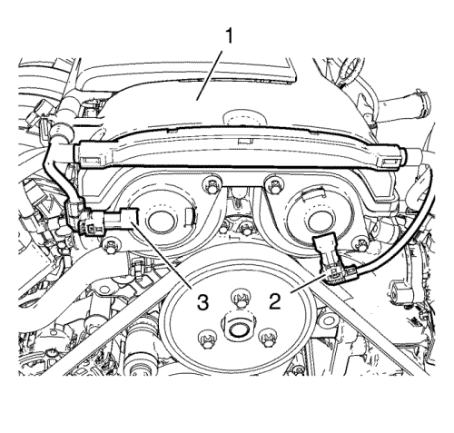
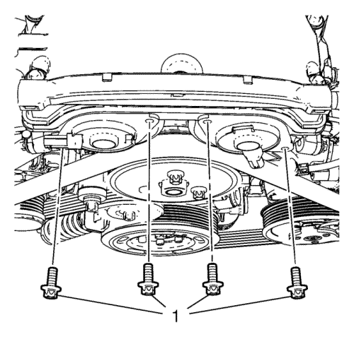
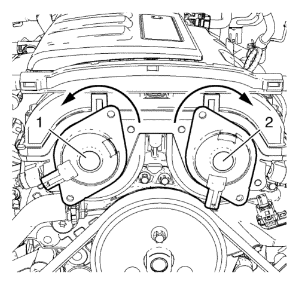
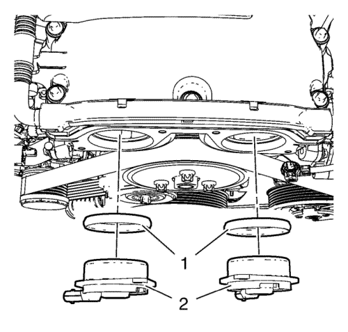
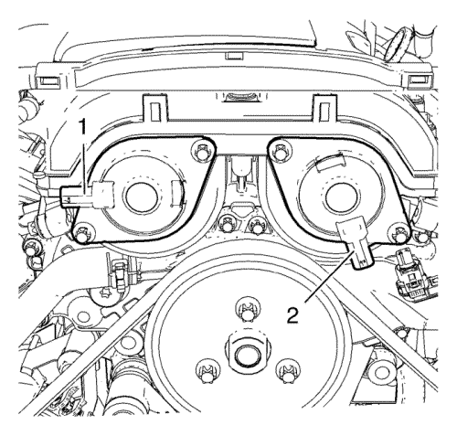

Sustitución de válvula magnética de actuador de posición del árbol de levas
Procedimiento de desmontaje
- Extraiga el conjunto del filtro de aire. Consulte Sustitución del filtro de aire → 1.4L LUH y LUJ.

- Desconecte el enchufe del mazo de cables de la válvula solenoide del actuador de posición del árbol de levas de admisión (3).
- Desconecte el enchufe del mazo de cables de la válvula solenoide del actuador de posición del árbol de levas de escape (2).
- Suelte el mazo de cables del ECM (1) de la tapa del árbol de levas.

- Retire los 4 tornillos (1) de la válvula solenoide del actuador de posición del árbol de levas.

- Gire con cuidado la válvula solenoide (1) del actuador de posición del árbol de levas hacia la derecha, como se observa.
- Gire con cuidado la válvula solenoide (2) del actuador de posición del árbol de levas de escape hacia la derecha, como se observa.

Atención: Las válvulas solenoide del actuador de posición del árbol de levas deben mantenerse paralelas con respecto a la cubierta delantera del motor durante el desmontaje y el montaje. Las válvulas solenoide del actuador de posición del árbol de levas pueden dañarse si se atascan durante este proceso.
- Extraiga con cuidado las 2 válvulas solenoides del actuador de posición del árbol de levas (2) y los anillos de estanqueidad (1).
Procedimiento de montaje
Atención: Las válvulas solenoide del actuador de posición del árbol de levas deben mantenerse paralelas con respecto a la cubierta delantera del motor durante el desmontaje y el montaje. Las válvulas solenoide del actuador de posición del árbol de levas pueden dañarse si se atascan durante este proceso.
Nota: Lubrique los anillos de junta con aceite para facilitar el montaje.
- Instale con cuidado las 2 válvulas solenoides del actuador de posición del árbol de levas (2) y los 2 anillos de estanqueidad (1) presionando con cuidado.
Precaución:Consulte Precaución con las fijaciones en la sección Prólogo.
- Monte los 4 tornillos (1) de las válvulas solenoides de los actuadores de posición de los árboles de levas y apriételos a 8 N·m (71 lib. pulg.).

- Las 2 válvulas solenoides del actuador de posición del árbol de levas deben montarse en la posición tal y como se indica en (1) y (2).
- Fije el mazo de cables del ECM (1) en la tapa del árbol de levas.
- Conecte el enchufe del mazo de cables de la válvula solenoide del actuador de posición del árbol de levas de escape (2).
- Conecte el enchufe del mazo de cables de la válvula solenoide del actuador de posición del árbol de levas de admisión (3).
- Monte el conjunto del filtro de aire. Consulte Sustitución del filtro de aire → 1.4L LUH y LUJ.
| © Copyright Chevrolet. All rights reserved |